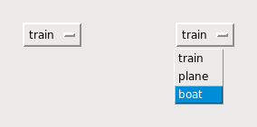

Цель этого виджета - предложить пользователю фиксированный набор пунктов меню в виде выпадающего меню.

На иллюстрациях выше показано OptionMenu в двух состояниях. Левый пример показывает виджет в его начальной форме. В правом примере показано, как он выглядит, когда мышь кликнула на нем и провела вниз до пункта меню 'boat'.
Чтобы создать новый виджет OptionMenu в качестве дочернего элемента корневого окна или фрейма с именем parent:
w = tk.OptionMenu(parent, variable, choice1, choice2, ...)
Этот конструктор возвращает новый виджет OptionMenu. Переменная variable - это экземпляр StringVar (см. Раздел 52, "Управляющие переменные: значения за виджетами"), которая связана с виджетом, а остальные аргументы - это пункты меню, которые будут отображаться в виджете в виде строк.
Иллюстрация выше была создана с помощью этого фрагмента кода:
optionList = ('train', 'plane', 'boat')
self.v = tk.StringVar()
self.v.set(optionList[0])
self.om = tk.OptionMenu(self, self.v, *optionList)
Чтобы узнать, какой пункт меню выбран в данный момент в виджете OptionMenu, метод .get() для связанной с ним управляющей переменной вернет этот пункт меню в виде строки.